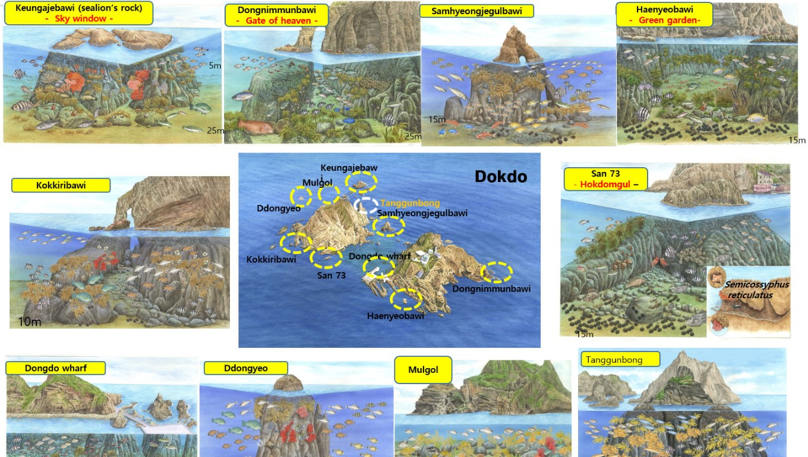

독도의 해양 생태계는 풍부한 생물 다양성으로 유명하다. 주변 해역은 차가운 북한 해류와 따뜻한 대한 해류가 만나는 곳으로, 이곳에서 발생하는 조류의 교차는 해양 생물들에게 풍부한 영양을 제공한다. 이러한 환경 덕분에 독도는 다양한 어종과 해양 생물의 서식지로, 특히 명태, 오징어, 대구 등 상업적으로 중요한 어종들이 많이 발견된다. 독도의 해양 생태계는 또한 희귀한 해양 포유류와 조류의 서식지로도 알려져 있다.
또한, 독도 주변 해역은 해양 보호구역으로 지정되어 있어, 지속 가능한 방식으로 어업 활동이 이루어지고 있다. 이는 생태계를 보존하는 데 중요한 역할을 하며, 해양 생물들의 서식지를 보호하고 있다. 독도의 해양 생태계는 과학자들에게도 큰 관심을 받고 있어, 지속적인 연구와 모니터링이 이루어지고 있다. 이를 통해 독도의 해양 환경을 보호하고 미래 세대에게 물려줄 수 있도록 하는 노력이 계속되고 있다.
